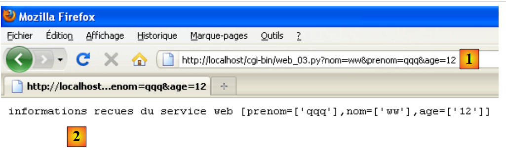

12. Web services in Python
 |
Python scripts can be executed by a web server. It is the server that will listen for client requests. From the client’s perspective, calling a web service is equivalent to requesting the URL of that service. The client can be written in any language, including Python. We need to know how to “communicate” with a web service, that is, understand the HTTP protocol used for communication between a web server and its clients. This is the purpose of the following programs.
The web service scripts will be executed by the Apache web server in WampServer. They must be placed in a specific directory: <WampServer>\bin\apache\apachex.y.z\cgi-bin, where <WampServer> is the WampServer installation folder and x.y.z is the version of the Apache web server.
 |
Simply placing Python scripts in the <cgi-bin> folder is not enough. The script must specify the path to the Python interpreter to be used on the first line. This path is included as a comment:
Readers should adapt this path to their own environment.
12.1. Client/server date and time application
Our first web service will be a date and time service: the client receives the current date and time.
12.1.1. The server
Notes:
- Line 6: The script must generate some of the HTTP headers for the response to the client itself. These will be added to the HTTP headers generated by the Apache server itself. The HTTP header on line 6 tells the client that a resource will be sent in text/plain format, i.e., unformatted text. Note the "\n" at the end of the header, which will generate a blank line after the header. This is mandatory: it is this blank line that signals to the HTTP client the end of the HTTP headers in the response. Next comes the resource requested by the client, in this case unformatted text;
- line 18: the resource sent to the client is text displaying the current date and time.
12.1.2. Two tests
The previous script can be run directly by the Python interpreter in a command window, as we have done so far. This helps eliminate any syntax or runtime errors. The following result is obtained:
Once the script has been tested in this way, it can be placed in the <cgi-bin> directory of the Apache server (see paragraph 12). Let’s launch the WampServer application. This starts both an Apache web server and a MySQL database server. For now, we will only use the web server. Then, using a browser, enter the following URL: http://localhost/cgi-bin/web_02.py:
 |
- in [1]: the requested URL;
- in [2]: the response displayed by the browser;
- in [3]: the source code received by the web browser. This is indeed the code sent by the Python script.
With certain tools (here, Firebug, a Firefox browser plugin), you can access the HTTP headers exchanged with the server. Above, the web browser received the following HTTP headers:
Lines 7–8 are recognizable as the HTTP header sent by the Python script. The preceding lines were generated by the Apache web server.
12.1.3. A programmed client
We will now write a script that will act as a client for the previous web service. We will use the features of the httplib module, which makes it easier to write HTTP clients.
Notes:
- Line 3: The re module is required for regular expressions, and the httplib module for HTTP client functions;
- line 9: An HTTP connection is created using port 80 on the HOST defined in line 6;
- line 11: the log allows you to view the HTTP headers of the client’s request and the server’s response;
- line 13: the web service URL is requested. There are two ways to request it: using an HTTP GET or POST command. The difference between the two is explained later. Here, it will be requested using the HTTP GET command;
- line 15: the server’s response is read. The entire response is obtained here: HTTP headers and the resource requested by the client. In its response, the server may have instructed the client to redirect. In this case, the httplib client automatically performs the redirection. The response obtained is therefore the one resulting from the redirection;
- line 17: the response consists of the HTTP headers and the document requested by the client. To retrieve only the HTTP headers, use [response].getHeaders(). To retrieve the document, use [response].read();
- Line 19: Once the response from the web server is obtained, the connection to it is closed;
- We know that the document sent by the server is a line of text in the format 15/06/11 14:56:36. Lines 22–26: We use a regular expression to extract the various elements of this line.
12.1.4. Results
Notes:
- line 1: the HTTP headers sent by the client to the web server;
- Lines 2–6: the HTTP headers in the web server’s response;
- Line 8: the document sent by the server;
- Line 11: the result of its processing;
12.2. The server retrieves the parameters sent by the client
In the HTTP protocol, a client has two methods for passing parameters to the web server:
- it requests the service URL in the form
GET url?param1=val1¶m2=val2¶m3=val3… HTTP/1.0
where the valid values must first be encoded so that certain reserved characters are replaced by their hexadecimal values.
- it requests the service URL in the form
then, among the HTTP headers sent to the server, includes the following header:
The rest of the headers sent by the client end with a blank line. It can then send its data in the form
where the values must, as with the GET method, be encoded beforehand. The number of characters sent to the server must be N, where N is the value declared in the header:
12.2.1. The web service
The following web service receives three parameters from its client: last_name, first_name, and age. It retrieves them from a dictionary-like structure named cgi.FieldStorage provided by the cgi module. The value vali of a parameter parami is obtained using vali = cgi.FieldStorage().getlist("parami"). This returns an array of:
- 0 elements if the parameter parami is not present in the client's request;
- 1 element if the parameter parami is present once in the client's request;
- n elements if the parameter parami is present n times in the client request.
Once the parameters have been retrieved, the script sends them back to the client.
A test can be performed using a web browser:
 |
In [1], the web service URL. Note the presence of the three parameters last_name, first_name, age. In [2], the web service response.
12.2.2. The GET client
Notes:
- lines 8–10: the values of the 3 parameters sent to the web service;
- line 13: these must be encoded. This is done using the urlencode method from the urllib module. This module is imported on line 3. The method takes a dictionary {param1:val1, param2:val2, ...} as a parameter;
- line 15: in a GET request (line 21), the client must place the encoded parameters at the end of the web service’s URL;
- The following lines have already been covered.
12.2.3. The results
Notes:
- line 2: note the encoding of the parameters (last_name, first_name, age);
- line 8: the web service's response.
12.2.4. The POST client
The POST client is similar to the GET client, except that the encoded parameters are no longer part of the target URL. They are passed as the third argument of the POST request (line 19).
12.2.5. Results
Notes:
- Note line 2: the POST method used by the client to send the encoded parameters:
- The HTTP Content-Length header indicates the number of characters that will be sent to the web service;
- this HTTP header is then followed by a blank line indicating the end of the HTTP headers;
- then the 39 characters of the encoded parameters are sent.
- Line 8: the web service’s response.
12.3. Retrieving environment variables from a web service
12.3.1. The web service
The Python CGI script runs in a system environment that has attributes. Its attributes and their values are available in the os.environ dictionary.
Notes:
- Line 3: You must import the os module to access the "system" variables.
If you run the script above directly (i.e., as a console script rather than a CGI script), you will see the following results in the console:
In a web browser (where the CGI script is executed), the following results are obtained:
 |
Note that depending on the execution context, the environment obtained is not the same.
12.3.2. The programmed client
12.3.3. Results
Note that the programmed client does not receive exactly the same response as the web browser. This is because the browser sent information to the web server that the server used to generate its response. Here, the programmed client did not send any information about itself.